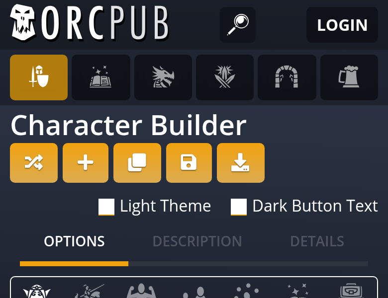
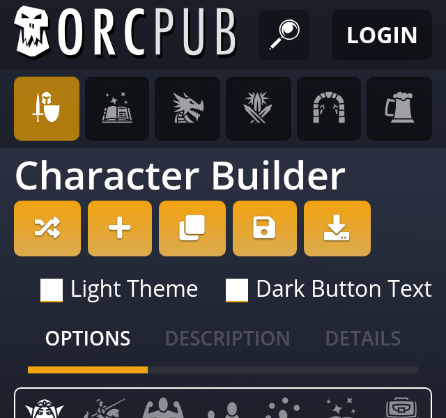
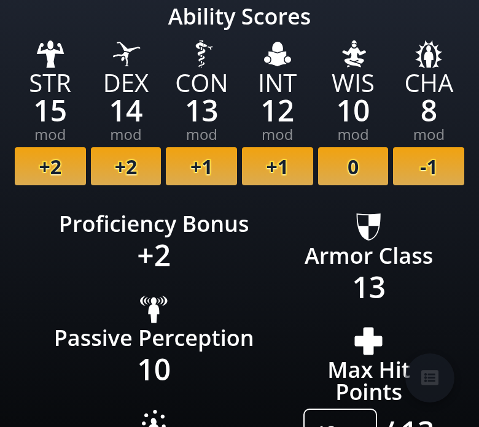
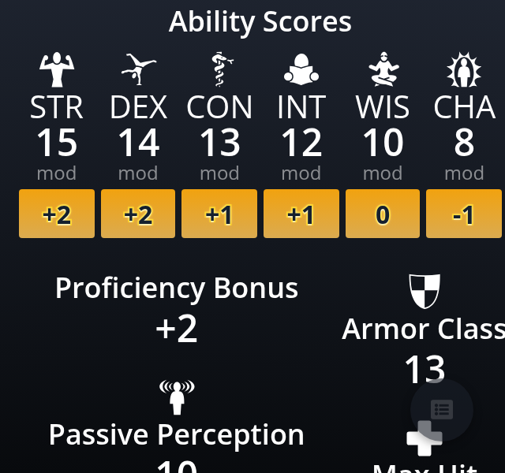
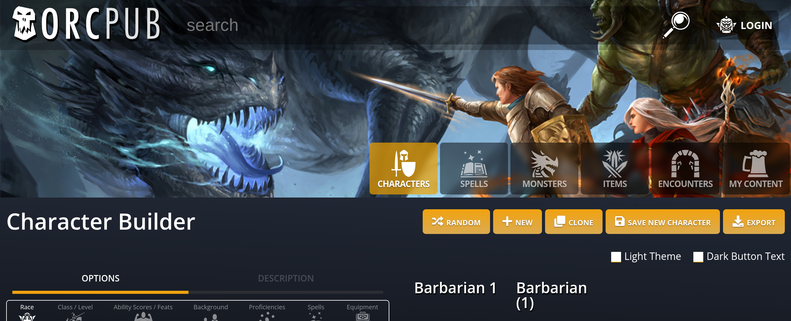

OrcPub · feature/style-guide · 1e677a3f → 521d0682
Style tidy, before and after
The three cleanups, plus the header's last inline styles. The code is tighter and the page is unchanged: before-and-after screenshots at 320, 390 and 1280px are byte-for-byte identical, and every header measurement matches.
1. The ability buttons’ strong glow is a named value
Before
;; core.clj, dark-text rule
[:.roll-button
{:text-shadow "0 0 2px rgba(255,255,255,0.7),
0 1px 0 rgba(255,255,255,0.55)"
...}]After
;; core.clj, beside the other two lifts
(def text-lift-light-strong
"0 0 2px rgba(255,255,255,0.7), 0 1px 0 rgba(255,255,255,0.55)")
[:.roll-button
{:text-shadow text-lift-light-strong
...}]2. Header tabs spaced by a gap; the !important override is gone
Before
;; views.cljs, each tab
[:div ... .header-tab.m-l-2.m-r-2 ...]
;; the tab row on a phone
{:class (when mobile? "p-l-10 p-r-10 phone-tabs")}
;; core.clj, undoing the tab margins on a phone
[:.phone-tabs
[:.header-tab:first-child {:margin-left "0 !important"}]
[:.header-tab:last-child {:margin-right "0 !important"}]]After
;; views.cljs, each tab
[:div ... .header-tab ...]
;; the tab row on a phone
{:class (when mobile? "phone-tabs")}
;; core.clj
[:.app-header-menu
{:gap "4px"
:padding "0 2px"}
[:&.phone-tabs {:padding "0 10px"}]]3. No inline styles in the header
Before
;; views.cljs
(def login-style-menu
{:background-color "rgba(0,0,0,0.4)"})
(def search-input-parent-style
{:background-color "rgba(0,0,0,0.3)"})
[:div.b-rad-5 ... {:style login-style-menu ...}]
[:div.b-rad-5 ... {:style search-input-parent-style ...}]
[:div {:style (when (not mobile?) {:min-width "53px"})}]After
;; views.cljs (both style maps deleted)
[:div.header-login-box.b-rad-5 ...]
[:div.header-search-box.b-rad-5 ...]
[:div {:class (when (not mobile?) "supporter-slot")}]
;; core.clj
[:.header-search-box {:background-color "rgba(0,0,0,0.3)"}]
[:.header-login-box {:background-color "rgba(0,0,0,0.4)"}]
[:.supporter-slot {:min-width "53px"}]The running page
Nine screenshots taken before and after; all nine are byte-identical. Five are shown.
Header, 390px phone identical


Header, 320px phone identical


Ability row, Dark Button Text, 390px identical


Ability row, Dark Button Text, 320px identical


Header, desktop 1280px identical


Inline styles still in the header
The active tab's amber and the tab flyout menus are still inline maps in the tab component (active-style, header-menu-item-style). They predate this branch and change with state, so they would move together with the shared button work rather than here.